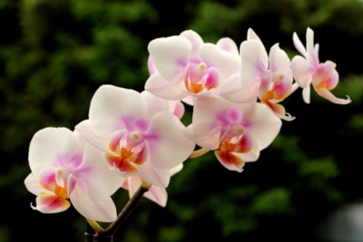

|  |
Las orquídeas son una de las flores decorativas más apreciadas por la belleza de sus flores y, especialmente, por sus llamativos colores. Al mismo tiempo, son una planta muy delicada que requiere de cuidados específicos para mantenerse sana. Si estás pensando en regalar una orquídea o te han regalado una y no tienes muy claras sus necesidades, estás en el sitio adecuado, ya que en este post te vamos a contar cómo cuidar una orquídea para que decore tu casa o la de quien vaya a recibir tu regalo por mucho tiempo. |
|
Puede parecer obvio, pero, antes que nada, es imprescindible identificar la especie de orquídea que tienes. Existen muchos géneros de orquídeas, phalaenopsis, oncidium, cambria, dendrobium, vanda, etc., siendo el primero el más común y extendido. Determinar de qué tipo es tu orquídea te ayudará a conocer sus características y los cuidados específicos que requiere, los cuales pueden variar bastante según el género. Normalmente, podrás conocer el género de tu orquídea con la pequeña etiqueta de identificación que acompaña a este tipo de flores. |
|